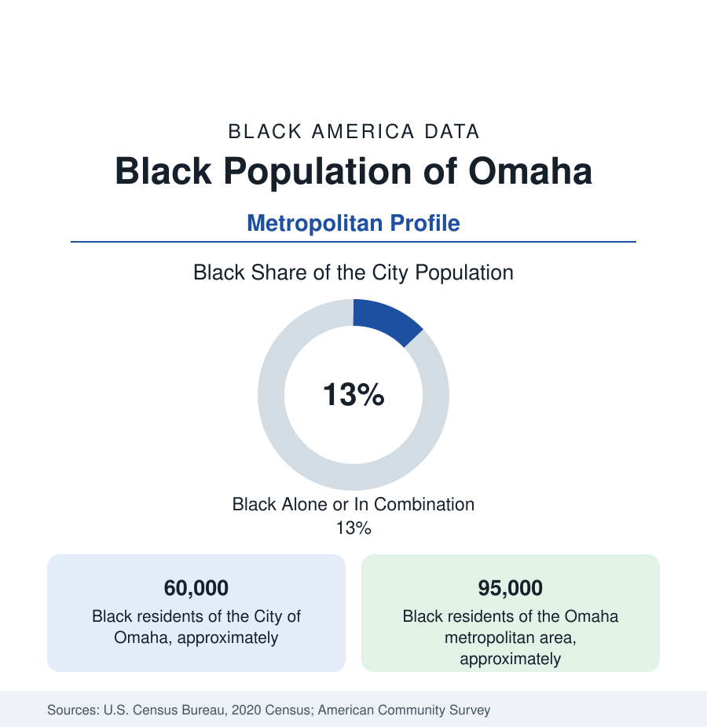

Black Cities
Black Omaha: North Omaha's Long Arc From the 24th Street Days
Omaha holds about 60,000 Black residents in the city and 95,000 across the metro — Malcolm X's birthplace and the plains' oldest Black community. The census profile.

Omaha holds about 60,000 Black residents within the city — Black alone or in combination, roughly an eighth of its 486,000 people — and about 95,000 across the metropolitan area. Black Omaha is the Great Plains' oldest substantial Black community: a railroad and meatpacking town whose North Omaha district produced Malcolm X (born here in 1925, his family's Omaha years ending in the Klan-era harassment that set his biography's course), a jazz corridor, and Nebraska's Black political life — all within a few square miles that the modern data still map.
North Omaha and 24th Street
The community's geography is the city's north: the Near North Side along North 24th Street — the corridor of the jazz age (the Dreamland Ballroom's stage, the Jewell Building) and the commercial heart through the 1960s — the Kountze Place and Miller Park districts of the professional class, and the broad northwestern extensions of the postwar years toward Florence and the 60th Street corridor. The corridor's attrition follows the section's grammar (the 1960s disorders' damage, the North Freeway's cut, disinvestment) and its recent data carry a deliberate revival file: the North 24th streetscape and business-incubator investments, the Malcolm X Memorial Foundation's center at his birthsite, the Great Plains Black History Museum (one of the Midwest's oldest Black museums, in the Jewell Building itself), and the Empowerment Network's north-side development coalition — among the most organized community-development infrastructures of any mid-size profile here, its outcomes data the local file to watch.
Railroads, Packers, and the Insurance Economy
Black Omaha's employment was built by the Union Pacific's yards and the South Omaha stockyards and packinghouses (the multiracial packing workforce of the Omaha file) — and rebuilt after their decline on the city's unlikely second act: Omaha is an insurance and financial-services center (Mutual of Omaha, Berkshire Hathaway's home, the payment-processor economy) whose back-office and claims workforces employ the Black community at the finance profile's operations tier, plus Offutt Air Force Base (Strategic Command) in Bellevue at the metro's south, the health systems, and the transportation-logistics economy of the Missouri crossing. The indicators record a wide internal spread: north Omaha's tracts at the state's poverty ceiling, the suburban increments (Bellevue, Papillion, northwest Omaha's subdivisions) at its comfort, and a Black homeownership base in the northwest districts that the packing decades financed.
Institutions and the Iowa Shore
The institutional layer: Omaha's Black churches (Salem Baptist's and Zion's historic congregations), the Omaha Star (the Black newspaper founded in 1938, among the Midwest's senior Black papers), the Urban League of Nebraska, and the city's distinctive political data — Omaha's Black community anchors Nebraska's only competitive congressional district (the Omaha metro district whose statewide nickname reflects its urbanity), making north Omaha's turnout a variable in national politics every cycle. Council Bluffs, across the river in Iowa, holds a small older community of its own, and the metro's newer layers — Omaha is a significant refugee resettlement city (South Sudanese and Congolese communities prominent in the north and northwest data) — extend the file across the state line and the diaspora at once.
Change and the Estimates
The estimates show the metro growing steadily, its Black population with it — the northwest corridors and Sarpy County's suburbs gaining fastest, north Omaha holding and in chosen blocks reinvesting, the Malcolm X and Dreamland heritage economy drawing the cultural traffic. The school's data (Omaha Public Schools, majority students of color, the state's largest district) carry the north side's schools as the equity file. The flood-and-levee geography of the river wards adds the plains' own resilience file.
Reading the Omaha Numbers
The health data of north Omaha — the life-expectancy and chronic-disease tables of the Douglas County health department — record the plains' version of the urban gap, with the federally qualified health centers of the north side carrying the access file for the whole state's largest Black population.
Omaha is the plains railroad profile at its most complete: a Black community as old as the transcontinentals, a corridor that swung, a hometown that produced the movement's most uncompromising voice from its own harassment. Its 95,000 metro residents hold North Omaha's revival in their hands — in a city small enough that the data and the neighbors are the same people.
More in Black Cities
Black Atlanta: Population, Distribution, and Growth of a Black Metropolis
Metro Atlanta holds more than two million Black residents — roughly one in three, second only to New York. The suburban distribution, migration history, and composition of Black Atlanta in the census data.
Black New York: The Largest Black Population in America
The New York metropolitan area holds about 3.4 million Black residents — more than any metro in the nation — and the city itself about two million. The census profile.
Black Washington: The District and the Metro
The Washington metro holds about 1.6 million Black residents, and the District itself — long a majority-Black city — now records a Black share near 41 percent. The census profile.
Source: U.S. Census Bureau, 2020 Census; American Community Survey; Population Estimates Program.